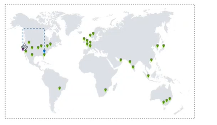

Esta primera semana fue dedicada al Onboarding por parte del grupo de engagement de la empresa, es decir nos instruyeron acerca de la filosofia de la empresa, sus valores, el nicho comercial al cual pertenecen, así como iniciativas que hay dentro de la empresa, como por ejemplo la iniciativa We Care, Team 3.0.

Virtualización Vmware
Definición de un Hipervisor
Un hipervisor hace parte del software,firmware o hardware que crea y corre máquinas virtuales. Un computador donde se estén ejecutando un hipervisor con uno o más máquinas virtuales será considerado un host machine. Cada máquina virtual es por tanto un guest machine. El hipervisor se encarga de presentar el guest operating system con una plataforma de operación virtual y administra los recursos asociados a dicho sistema operativo
- Type 1: Native o Bare metal, estos hipervisores corren directamente sobre el hardware del host para controlar el hardware y administrar las máquinas virtuales. (VMware ESX(i), Microsoft Hyper-V)
- Type 2: O Hosted, es un hipervisor que funciona sobre un sistema operativo tradicional.Por tanto los guest operating-system corren por encima de esta capa del hipervisor. VMware Workstation, VirtualBox
ESX vs ESXi
ESX fue el primer hipervisor desarrollador por VMware, sin embargo no contaba con las suficientes caracteristicas, para escalar de manera prolongada durante el tiempo, por tal razón se creó ESXi donde se soluciona las limitaciones de ESX además de agregar nuevas funcionaliades.
Host and Vms
Todas las máquinas virtuales en un cierto host están provistas de los siguientes recursos:
- CPU
- RAM
- Storage
- Networking
Storage protocols and connection type
-
Locally Attached:
- Sata
- SAS
- SCSI
- Shared:
- iSCSI
- Fibre-Channel
- Fibre-channel over Ethernet
- NFS 3/NFS 4.1
Storage Devices
- SAN:
- High-grade storage device
- Costoso
- Soporta más protocolos
- Perfecto para producción
- Caracteristicas avanzadas (SAN Snapshots)
- NAS:
- Dispositivo más economico
- Menor cantidad de protocolos
- Perfecto para backups
- Deduplication appliance NAS boxes
Vcenter
Vcenter es un producto que maneja la parte de todos los recursos y features de toda la infraestructura local, muchos host pueden ser añadidos a vCenter y luego ser agregados a clusters y agrupados en datacenters.
Hay distintas formas de hacer deployment, una de las primeras formas es por medio de un appliance que es una imagen lista para ser funcional.
- Deployed as vCenter Server Appliance(VCSA):
- Based on Photon
- Only virtual
- Database Option
- Core Components:
- vCenter Server
- Single Sign-on
- VMware vSphere web client: Con esta applicación podemos acceder de manera remoto a nuestrs hosts
Hay distintos features caracteristicas en vSphere como:
- vMotion: Mover una VM sin interrupción de un host a otro
- Storage vMotion Mover archivos de almacenamiento de un datastore a otro
- Distributed Resource Scheduler: Utiliza vMotion para migrar VM entre host y datastores para balancear cargas
- High Availability: En caso de que un host falle, reiniciará la instancia en un host diferente, con bajos downtime
- Fault Tolerance: Corre una copia perfecta de una VM y la cambia en caso de un failure en el hardware
Por el lado de licensamiento hay distintas maneras de utilizar vSphere
- Hipervisor ("Free")
- Essentials
- Essentials Plus
- Standard
- Enterprise
- Enterprise Plus
La conexión para conectarme con el vCenter tengo distintas formas, en un host de ESXi tengo acceso de root, y puedo acceder a el por el puerto TCP 443 o mediante SSH utilizando el puerto 22. Mediante el puerto 902 por NFC
a Vcenter nos podemos conectar por medio del cliente de vSphere vcenteriporfqdn/ui/ y de manera legacy por medio del puerto 443
Managed Object Browser
Es una interfaz grafica que nos permite navegar por los objetos de un servidor e invocar metodos. Cualquier cambio realizado a través de MOB´s tomarán efecto en el servidor. Hay que separar los MOB´s de cada host y de cada vCenter.
VM Files
- machine.vmx : configuración de la máquina virtual
- machine-falt.vmdk : archvivos descriptores de disco y data blocks
- machine-0001-delta.vmdk : Delta disk descriptor and disk data blokcs, cuando la máquina está corriendo un spanshot
- machine-ctk.vmdk : utilizada para mantener los cambios
- mchine.nvram : Esencialmente la bios de la máquina virtual
- machine.vmsd : Snapshot tree y Snapshot dek estado de archivos
- machine.log : Logs especificos de la instancia están guardados acá
VMware Tools
Existen distintas herramientas para interactuar con el hipervisor, existen software y drivers de: Red, storage, graficos, etc.
Permite comunicaciones con los guest via network-less VIX API.
En windows se utiliza .msi package y en Linux se utiliza .tar con perl script.
Snaphots
Las snapshots son una copia persistente del estado de una máquina en un punto del tiempo, hay dos formas de implementar un snapshot, por medio de Redirect-on-write (Utilizado en ESXi) y Copy-on-write
Redirect-on-write
Una vez un snapshot es creado,los cambios en el disco son escritos en un disco delta, en cambio el disco base es imposible
leer y escribir.
Los arboles de snapshots pueden ser mantenidos, VMware suporta hasta 32 snapshots en una única rama. I/O Performance sufre de manera
significativa durante los snapshots, y el delete de Snapshots puede causar un freeze(vSphere < 6.0)
VMFS
Virtual Machine File System, son archivos de sistema de clusters. Es utilizado para guardar las imagenes de las máquinas, incluyendo los snapshots. Multiples servidores pueden escribir/leer al mismo archivo de manera simultanea, mientras que los archivos individuales de cada máquina virtual está bloqueado
VMFS-6 Introduce dos nuevos bloques internos para LFB large file binary seteados a 512MB y SMB small file blocks a 1Mb. Son utilizados para archivos VMFS-6.
RDM
Raw Device Mapping, nos permite conectar LUNS a host de manera directa bypaseando la capa de VMFS. Por ejemplo un disco NTFS puede ser ligado a una instancia de Windows.
- Physical RDM, aka "Pass through"
- Almost all SCI commands are sent to the device, unfiltered
- Snapshots are not supported
- Virtual RDM:
- Read an write SCSI commands are translated by the ESXi host
- Snapshots are supported
Disk proviosining types
- Thin Provisioning: Only the blocks that have been written to are actually allocated, such disk slowly grows in size on the datastore
- Thick lazy-zeroed: El espacio es inmediatamente alocado para dicho disco
- Thick eager-zeroed: El espacio es inmediatamente alocado y escribe el cero. (Utilizado mucho para aplicaciones transaccionales)
Discos Dependiente y Independiente
- Dependiente: El más común, soporta snapshots
- Persistente Independiente: No soporta snapshots, los cambios siempre están escritos en el disco
- No persistente Independiente: Los cambios siempre son escritos en un disco delta el cual es eliminado una vez la máquina virtual es apagada, util para testings y setups de laboratorio.
Permisos
Un rol es un set de permisos granulares para cada tipo de objeto manejado por Vsphere. Los roles son asignados por usuario o por grupo para un objeto en especifico(e.g VM, datastore) or a container (folder,resource pool, cluster, etc).
Propagate to children es una opción que permite propagar los permisos a los hijos de los objetos de un contenedor.
Virtual Volumes
Es un nuevo concepto que permite granularizar el Volume de una instancia, entonces en vez de tener un solo LUN para el storage de las 3VMs, en un contenedor y gracias a una conexión provista por el vendor del storage se puede separar por medio de volumenes virtuales los storage de cada máquina virtual, aumentando así el fault tolerance en ese hardware.
Data Protection
Terminologia y Conceptos
- Bussiness Continuity: Habilidad de asegurar por parte de una organización las operaciones ante un desastre critico
- High Availability: Habilidad para mantener data/información en sincronización entre dos dispositivos (local o externo) y mantener la información al día.
- Protected Site: Sitio donde se encuentra la producción del cliente, donde está el core del cliente
- Recovery Site: Lugar donde tenemos un equipo listo en caso de una falla del equipo primario
- Software Replication: Distintas tecnologias que están en el mercado para replicar información y enviarlo al sitio secundario
- Hardware Replication: Los vendors en su portafolio ofrecen servicios a nivel de hardware
- Failover/Failback: Es el proceso automatico o manual de cambiar todas las operaciones del sitio protegido al recovery site
- Syncronous copy: Cualquier cambio producido en el sitio primario, será copiado inmediatamente en el sitio de recovery
- Asyncronous copy: Es una copia realizada On-Demand o copia periodica
Hay tecnologias que nos permiten aplicar recovery plan disaster antes del desastre entre eso se encuentran los AAC (Cluster Activo Activo, por ejemplo VMware )y los APC (Cluster Activo Pasivo) sincronización en un segundo nodo pasivo, SR ( Sincronous Replication) Nuestro sistema de contingencia tiene la data al día, se debe subir servicios en secundario, AR (Asyncronous replication) se realiza la copia de datos de manera periodica y podemos perder información debido a la no sincronización, LB(Local Backup) Es decir un respaldo de la información del servidor y realizar una restauración de la información TB (Tape Backup ) almacenamiento en cintas magneticas para largas retenciones, es un proceso muy lento debido a que toca pedir ayuda a terceros. AB (Cloud Backup(?) ) tengo un proceso de rehidratación que dura 1 o 2 días para tener la data aumentando el tiempo de recuperación del desastre.
VMware Options: vSphere Replication

Permite realizar replicaciones utilizando la replicación por medio de vSPhere
Site Recovery Manager
Se necesitan los archivos de configuración y la data y Vmware pueda abrir una nueva oepración dada una falla
Availability Sets
Concepto de Azure para configurar maquinas en distintas zonas para mantener el servicio dado una falla en uno o dos dominios, son clusters que están repartidos en distintos dominios
Disaster Recovery
Azure permite tener zonas distintas para mantener información resguardada
Availability Zones
Son datacenters en una misma ubicación geografica donde hay una replicación de los datos, donde si hay un fallo nosotros como usuarios seamos indiferentes al fallo y poder seguir consumiendo el servicio.
Backup Policies
Se pueden configurar politicas de backup para las instancias y configurar de manera granular las politicas
AWS - Options Backup
De igual forma en AWS, podemos utilizar servicios y politicas de Backup para el mantenimiento de los datos.
AWS - Disaster Recovery
AWS, tiene algunas formas de si por ejemplo pierdes una instancia, AWS crea una nueva instancia y la reemplaza sin tener que acceder de manera manual
Disaster Reocovery Plan
Es una documentación estructurada de la definición y proceso que describe como Una organización puede regresar de manera rapida al trabajo ante un desastre no planeado . El DRP es una parte esencial de un business continuity plan. BCP
- Todos en la compañia deben conocer el DRP
- Define prioridades y categorización de la data
- DR site debe tener almenos un 70% de los recursos?
Existen procesos como Backup,Storage, Replication, HA.
Business Continuity
Es la habilidad para asegurar que una organización tendrá la capacidad de operar sus funciones criticas de negocio durante eventos de emergencia. Dichos eventos pueden incluir desastres naturales, crisis, pandemia, o cualquier disrupción en la operación de negocio.
Todos en la compañia están encargados de garantizar que el BC se lleve a cabalidad, de igual forma la data o la información del negocio es la parte más importante del negocio.